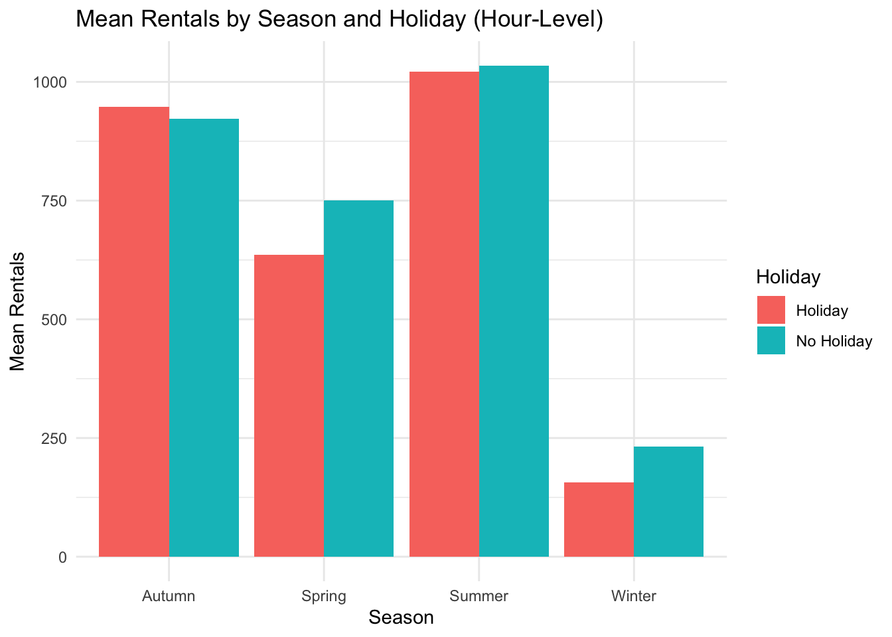

Rented_Bike_Count Hour Temperature Humidity
Min. : 0.0 Min. : 0.00 Min. :-17.80 Min. : 0.00
1st Qu.: 191.0 1st Qu.: 5.75 1st Qu.: 3.50 1st Qu.:42.00
Median : 504.5 Median :11.50 Median : 13.70 Median :57.00
Mean : 704.6 Mean :11.50 Mean : 12.88 Mean :58.23
3rd Qu.:1065.2 3rd Qu.:17.25 3rd Qu.: 22.50 3rd Qu.:74.00
Max. :3556.0 Max. :23.00 Max. : 39.40 Max. :98.00
Windspeed Visibility Dew_Point_Temperature Solar_Radiation
Min. :0.000 Min. : 27 Min. :-30.600 Min. :0.0000
1st Qu.:0.900 1st Qu.: 940 1st Qu.: -4.700 1st Qu.:0.0000
Median :1.500 Median :1698 Median : 5.100 Median :0.0100
Mean :1.725 Mean :1437 Mean : 4.074 Mean :0.5691
3rd Qu.:2.300 3rd Qu.:2000 3rd Qu.: 14.800 3rd Qu.:0.9300
Max. :7.400 Max. :2000 Max. : 27.200 Max. :3.5200
Rainfall Snowfall
Min. : 0.0000 Min. :0.00000
1st Qu.: 0.0000 1st Qu.:0.00000
Median : 0.0000 Median :0.00000
Mean : 0.1487 Mean :0.07507
3rd Qu.: 0.0000 3rd Qu.:0.00000
Max. :35.0000 Max. :8.80000
# Categorical levelsunique(bike_data$Seasons)
[1] Winter Spring Summer Autumn
Levels: Autumn Spring Summer Winter
# A tibble: 8 × 5
Seasons Holiday mean_rent sd_rent median_rent
<fct> <fct> <dbl> <dbl> <dbl>
1 Autumn Holiday 948. 603. 900
2 Autumn No Holiday 923. 618. 852
3 Spring Holiday 635. 609. 366.
4 Spring No Holiday 750. 619. 605
5 Summer Holiday 1022. 564. 925
6 Summer No Holiday 1034. 693. 904.
7 Winter Holiday 157. 108. 138
8 Winter No Holiday 232. 152. 212
This table shows clear seasonal differences in bike rentals.
Summer has the highest average rentals, followed by Autumn.
Winter has very low rental counts, which matches expectations due to cold weather.
Holidays generally have slightly lower rentals than non-holidays in each season.
Spring shows more variation, with wide differences between the mean, median, and standard deviation.
Overall, season and holiday status clearly affect bike rental behavior.
Visualization
ggplot(bike_data_summary, aes(x = Seasons, y = mean_rent, fill = Holiday)) +geom_bar(stat ="identity", position ="dodge") +labs(title ="Mean Rentals by Season and Holiday (Hour-Level)",x ="Season",y ="Mean Rentals") +theme_minimal()

This plot shows clear differences in bike rentals across seasons and holidays.
Summer has the highest average rentals, followed by Autumn.
Spring rentals are moderate, and Winter rentals are the lowest.
Holidays generally have slightly lower rentals than non-holidays in every season, especially in Winter and Spring where the drop is more noticeable.
Overall, this plot shows that both season and holiday status strongly affect how many bikes are rented each hour.